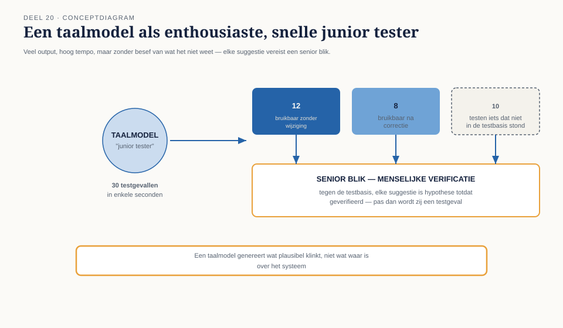

Deel 20 — Testen met generatieve AI
Reader · Ductus-cursus Testen en Kwaliteitsborging · niveau 2 (professional) · deel 20 van 30
Dit deel is zelfstandig leesbaar en los aanbiedbaar, ook voor wie de rest van de cursus niet volgt. Waar het voortbouwt op eerdere delen, wordt dat kort samengevat in plaats van verondersteld.
Leerdoelen
Na dit deel kun je:
- generatieve AI inzetten voor het genereren van testgevallen en testdata, met scherp zicht op de beperkingen;
- AI inzetten als reviewondersteuning, zonder de menselijke review te vervangen;
- het orakelprobleem herkennen en uitleggen waarom AI het niet oplost, hooguit verplaatst;
- herleidbaarheid en aantoonbaarheid van AI-ondersteund testwerk waarborgen, ook onder toezicht;
- bewust en beargumenteerd bepalen wat nooit aan een AI-model wordt uitbesteed.
Studielast: één dagdeel klassikaal, circa drie uur zelfstudie.
1. Snel, veel, en niet per se juist
Iris vroeg een taalmodel om testgevallen te genereren voor de deeltijdwijzigingsmodule van het Mutatieplatform, op basis van de acceptatiecriteria. Binnen enkele seconden verschenen dertig testgevallen: overtuigend geformuleerd, keurig gestructureerd, met concrete percentages en data. Twaalf ervan waren bruikbaar zonder wijziging. Acht waren bruikbaar na correctie. Tien testten iets dat helemaal niet in de acceptatiecriteria stond — plausibel klinkende regels die het model kennelijk "logisch" vond, maar die nergens in de testbasis terug te vinden waren.
Dit is geen incident maar een structureel kenmerk van generatieve AI, en de reden dat dit deel evenveel over grenzen gaat als over mogelijkheden.
Kernzin — Een taalmodel genereert wat plausibel klinkt gegeven de vraag, niet wat waar is over het systeem. Dat onderscheid is de kern van dit hele deel.
2. Testgevallen en testdata genereren
2.1 Waar AI sterk is
- Snelheid en volume: een eerste opzet van testgevallen uit een user story of acceptatiecriterium, veel sneller dan handmatig.
- Variatie suggereren: AI kan grenswaarden, equivalentieklassen en randgevallen voorstellen die een mens over het hoofd zou kunnen zien — een aanvulling op, niet vervanging van, de systematiek uit deze cursus.
- Testdata genereren: realistische, gestructureerde synthetische data (namen met variatie, geldige maar ongebruikelijke combinaties) — direct bruikbaar in combinatie met de technieken uit eerdere delen.
2.2 Waar AI zwak is
- Domeinkennis die niet expliciet in de prompt zit. Een model kent de Wtp-transitieregels niet vanzelf correct, tenzij ze expliciet zijn meegegeven — en zelfs dan kan het plausibele maar onjuiste aanvullingen doen.
- Weet niet wat het niet weet. Waar niveau 1 (deel 9) leerde dat een goed testrapport expliciet benoemt wat onbekend is, doet een taalmodel dat zelden vanzelf: onzekere output oogt even zelfverzekerd als zekere.
- Neemt de testbasis niet als enige waarheid. Het model vult hiaten in de testbasis op met wat "logisch" lijkt, in plaats van het hiaat te signaleren zoals niveau 1, deel 2 voorschrijft.

2.3 De werkwijze die dit beheersbaar maakt
- Geef het model expliciet de testbasis mee, niet alleen een samenvatting.
- Vraag om herleidbaarheid: laat het model bij elk testgeval aangeven uit welk deel van de testbasis het is afgeleid.
- Behandel elke suggestie als hypothese, niet als testgeval — pas na menselijke verificatie tegen de testbasis (dezelfde discipline als traceerbaarheid, niveau 1 deel 2) wordt zij een testgeval.
- Gebruik de systematiek uit deze cursus (equivalentieklassen, grenswaarden, beslissingstabellen) om te controleren of de AI-suggesties een dekking benaderen die met de technieken zelf ook bereikt zou zijn — een AI-suggestie die een hele equivalentieklasse mist, is een gevonden gat, geen reden om de techniek te laten varen.
3. AI als reviewondersteuning
3.1 Een tweede paar ogen, geen vervanging
Niveau 1, deel 4 behandelde statisch testen en reviews, met de nadruk op individuele voorbereiding als meest overgeslagen stap. AI kan hier een nuttige rol spelen: een eerste, snelle doorlichting van een document op tegenstrijdigheden, ontbrekende gevallen of onduidelijke formuleringen — vergelijkbaar met statische analyse (niveau 1, deel 4, §5), die ook structuur vindt maar geen betekenis.
3.2 Wat dit niet vervangt
Een AI-doorlichting vervangt niet de menselijke reviewbijeenkomst (niveau 1, deel 4, §4) waarin bevindingen gezamenlijk worden gewogen, en al helemaal niet de individuele voorbereiding — het risico bestaat juist dat een AI-samenvatting die voorbereiding vervangt in plaats van ondersteunt, wat de kwaliteit van de review juist zou verlagen.
4. Het orakelprobleem, opnieuw
4.1 Wat het orakelprobleem is
Niveau 1, deel 5 introduceerde het orakelprobleem kort: waartegen vergelijk je het waargenomen resultaat om te bepalen of het correct is? AI verandert dit probleem niet — zij verplaatst het.
4.2 Waarom AI het orakelprobleem niet oplost
Wanneer je een taalmodel vraagt "is dit resultaat correct?", geeft het een antwoord dat plausibel klinkt — maar het model heeft, net als bij het genereren van testgevallen, geen toegang tot de waarheid over het systeem, alleen tot patronen in taal. Een model kan een verkeerd resultaat overtuigend als correct bevestigen, met dezelfde stelligheid als een correct resultaat.
Kernzin — Een taalmodel is geen orakel. Het is, in het beste geval, een snelle assistent bij het toepassen van een orakel dat een mens nog steeds moet leveren: de testbasis, een onafhankelijke berekening, of een deskundige.
4.3 Waar AI wél veilig als hulpmiddel dient
Voor lage-risico-items (deel 12) kan een AI-suggestie over verwacht gedrag een nuttig startpunt zijn, mits gevolgd door een snelle menselijke check. Voor hoog-risico-items (zoals de rekenregels in de invaarberekening, niveau 3-vooruitblik) is dit ontoelaatbaar: daar moet het orakel aantoonbaar onafhankelijk van het te testen systeem zijn, en een taalmodel getraind op vergelijkbare tekst is dat niet gegarandeerd.
5. Herleidbaarheid en aantoonbaarheid onder toezicht
5.1 Waarom dit specifiek voor Meridiaan scherp is
Niveau 1, deel 9 introduceerde het besluitvormend testrapport: wat is vastgesteld, wat niet, en de resterende onzekerheid. Bij AI-ondersteund testwerk komt daar een extra vraag bij: kan worden aangetoond wélk deel van het testwerk door een mens is geverifieerd, en welk deel ongecontroleerde AI-output is gebleven?
5.2 Een vaste praktijk
- Markeer AI-gegenereerde testgevallen expliciet als zodanig totdat zij menselijk zijn geverifieerd — vergelijkbaar met de status "niet uitgevoerd" in het WGP 2.0-rapport (niveau 1, deel 1), die ook expliciet zichtbaar moest blijven in plaats van te verdwijnen in een percentage.
- Leg vast welke versie van welk model, met welke prompt, is gebruikt — herleidbaarheid die in niveau 3 (deel 23-24) een harde toezichtseis wordt, maar die nu al goede praktijk is.
- Nooit een testrapport opstellen dat niet onderscheidt tussen mens-geverifieerd en AI-gesuggereerd werk.
6. Wat nooit aan een model wordt uitbesteed
Consistent met de rolgrens die door de hele cursus loopt (niveau 1, deel 1, §2.1): het besluit over wat "goed genoeg" is, blijft bij een mens met het mandaat om dat te beslissen. Concreet, bij Meridiaan nooit aan AI overgelaten:
- Het definitieve oordeel of een testresultaat correct is bij een hoog-risico-item.
- De keuze wat bewust niet wordt getest (deel 12, §4) — dat besluit vereist mandaat, niet snelheid.
- Het testrapport dat aan een besluitvormer wordt voorgelegd, ongecontroleerd overnemen van AI-gegenereerde tekst.
7. TMAP-lens
Hoe heet dit daar. TMAP plaatst AI-ondersteuning binnen kwaliteitsengineering (deel 11) als een van de moderne bouwstenen, met dezelfde nadruk op menselijke verantwoordelijkheid: AI versnelt bouwstenen, het vervangt geen enkele bouwsteen volledig.
Waar het werkelijk anders is. TMAP benadrukt sterker de VOICE-koppeling: elke AI-suggestie zou getoetst moeten worden aan de vraag of zij daadwerkelijk bijdraagt aan de nagestreefde waarde, niet alleen aan de vraag of zij "meer testgevallen" oplevert — een directe toepassing van de waarschuwing tegen het aantal-testgevallen als perverse prikkel (niveau 1, deel 9).
Kernbegrippen
generatieve AI voor testgevallen en testdata · AI als reviewondersteuning · orakelprobleem (verplaatst, niet opgelost) · herleidbaarheid van AI-ondersteund testwerk · wat nooit aan een model wordt uitbesteed
Samenvatting in vijf zinnen
- Een taalmodel genereert wat plausibel klinkt, niet wat waar is over het systeem — dat onderscheid bepaalt elke andere les in dit deel.
- AI is sterk in snelheid, volume en het suggereren van variatie, en zwak in domeinkennis die niet expliciet is meegegeven en in het herkennen van wat het niet weet.
- AI ondersteunt reviews met een snelle, structurele doorlichting, maar vervangt nooit de individuele voorbereiding of de menselijke weging van bevindingen.
- AI verplaatst het orakelprobleem in plaats van het op te lossen: het model heeft geen toegang tot de waarheid over het systeem, alleen tot patronen in taal.
- AI-ondersteund testwerk vereist expliciete herleidbaarheid — welk deel is mens-geverifieerd, welk deel is ongecontroleerde suggestie — en het definitieve oordeel bij hoog risico blijft altijd bij een mens met mandaat.